2. Floating Little Leaves of Code
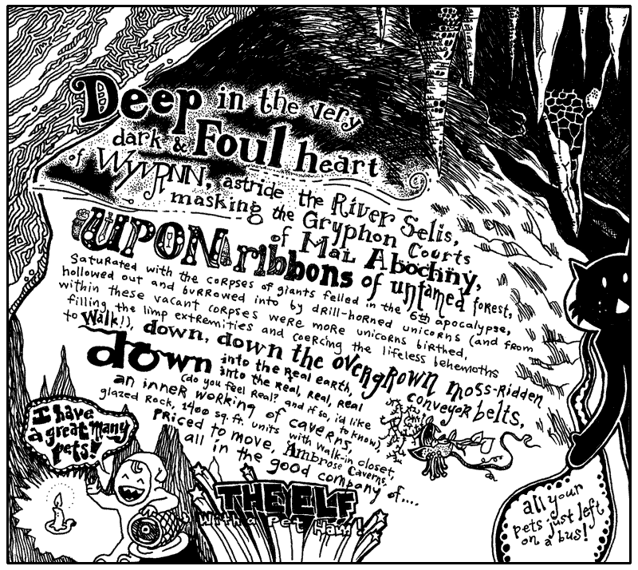
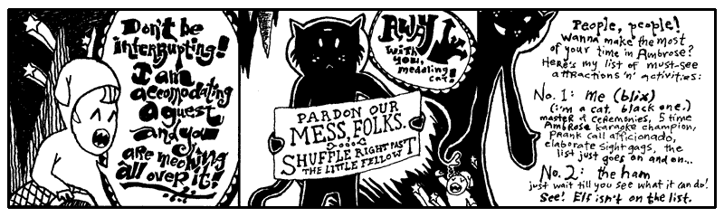
Blix was another two houses down, navigating through the askew brickwork, the paved gully that led to R.K.'s Gorilla Mint.
I’ve never seen the ham do anything but leak juice. Today, our business in Ambrose Caverns is with the elf. He is a crucial part of the next lessons. Let’s all make him feel welcome. Go start warming up your listening hats! (And please change out of those ridiculous stirrup pants.)
A prompt warning: this lesson is much slower. Stay with it. This will be a long, deep breath. The most crucial stage of your instruction. It may seem like you’re not learning much code at first. You will be learning concepts. By the end of this chapter, you will know Python’s beauty. The coziness of the code will become a down sleeping bag for your own solace.
1. The Leaf as a Status Symbol in Ambrose
Alright, Elf. Give us a quick rundown of the currency issues you’ve faced there in your kingdom.
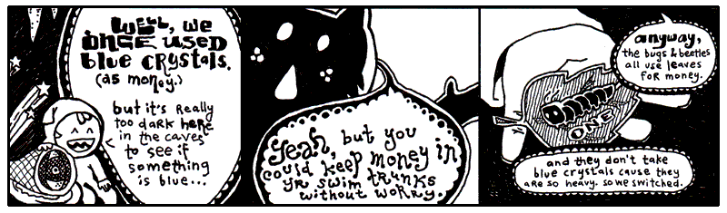
Yeah, that’s not the way I remember it. This Elf was paging me constantly. When I refused to call him back, he somehow left a message on my pager. Meaning: it beeped a couple times and then printed out a small slip of paper. The slip said something to the effect of, “Get down here quick!” and also, “We’ve got to rid the earth of this scourge of entrepreneurial caterpillars, these twisted insect vikings are suffocating my blue crystals!”
Lately, the exchange rate has settled down between leaves and crystals. One tree-grown note is worth five crystals. So the basic money situation looks like this:
This example is, like, totally last chapter. Still. It’s a start. We’re setting two variables. The equals sign is used for assignment.
Now leaf_tender represents the number 5 (as in: five blue crystals.) This
concept right here is half of Python. We’re defining. We’re creating. This
is half of the work. Assignment is the most basic form of defining.
You can’t complain though, can you Elf? You’ve built an empire from cashing your blue crystals into the new free market among the forest creatures. (And even though he’s an elf to us, he’s a tall monster to them.)
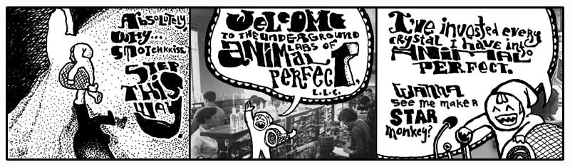
Nonono. Hang on a sec. You’re not ready for what the Elf here is doing in his caves. You’ll think it’s all positively inhumane, naughty, sick, tweeested, yada yada.
Now You’re Going to Hear the Animal Perfect Mission Statement Because This Is A Book And We Have Time And No Rush, Right?
Back, back, way back before speedboats, I owned a prize race horse who took a stumble on the track. She did ten front flips and crashed into a guy who was carrying a full jar of mayonnaise. We had blood and mayonnaise up and down the track. Needless to say, she was a disaster.
The vet took one look at her and swore she’d never walk again. Her legs were gone and the vet wouldn’t allow a legless horse to just sit around. We’d need to put her down. He swore his life and career on it, insisting we divide into two parallel lines. The people who could not refute the doctor’s claims on one side; those too stubborn to accept his infallible medical reasoning on the other. The Elf, his pet ham, and I were the only ones in that second line.
So while the others heaped up trophies and great wreaths around the horse, bidding it a fond farewell before the bullet came to take him home, the Elf and I frantically pawed the Internet for answers. We took matter into our own hands, cauterizing her leg wounds with live crawdads. It worked great! We now had a horse again. Or at least: a horse body with a crustaceous abdominal frosting.
She scurried everywhere after that and lived for years in pleasantly moist underground cavities.
Animal Perfect is now the future of animal enhancement. They build new animals and salvage old-style animals for parts. Of course, they’ve come a long ways. When Animal Perfect started, you’d see a full-grown bear walk into Animal Perfect and you’d see a full-grown bear with sunglasses walk out. Completely cheesy.
Stick around and you’ll see a crab with his own jet pack. That’s a new 2024 model jetcrab.
But now, the whole operation is up and running. And the cleanliness of the place is astonishing. All the equipment is so shiny. Everything is in chrome. Oh, and all the staff have concealed weapons. They’re trained to kill anyone who enters unannounced. Or, if they run out of bullets, they’re trained to pistol whip anyone who enters unannounced.
Elf, make me a starmonkey.
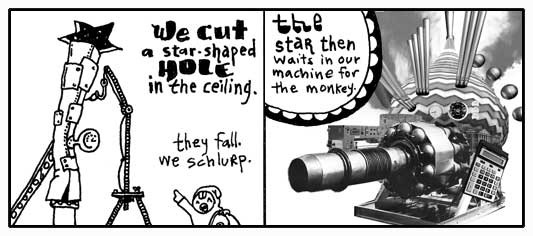
Some imaginary Python for you:
Variable pipe. Method catch_a_star. A lot of Pythonists like to think of
methods as a message. Whatever comes before the dot is handed the message. The
above code tells the pipe to catch_a_star.
This is the second half of Python. Putting things in motion. These things you define and create in the first half start to act in the second half.
- Defining things.
- Putting those things into action.
So what if the star catching code works? Where does the star go?
See, it’s up to you to collect the miserable, little star. If you don’t, it’ll simply vanish. Whenever you use a method, you’ll always be given something back. You can ignore it or use it.
If you can learn to use the answers that functions, methods, and operators give you back, then you will dominate.
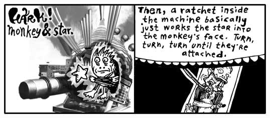
Quickly then.
The ratchet gets an attach message. What needs to be attached? The method
arguments: the captive_monkey and the captive_star. We are given back a
starmonkey, which we have decided to hang on to.
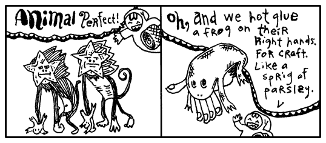
This is turning out to be such a short, little proggie that I’m just going to put it all together as one statement.
See how pipe.catch_a_star is right in the arguments for the method? The caught
star will get passed right to the ratchet. No need to find a place to put it.
Just let it go.
2. Small and Nearly Worthless
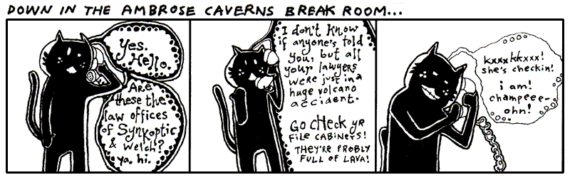
The hotel here in Ambrose is no good at all. The beds are all lumpy. The elevator is tiny. One guy put all his bags in the elevator and found out there wasn’t room for him. He hit the button and chased up the stairs after it all. But the stairwell turned out to be too narrow and his shoulders got wedged going up.
The soap mini-bars they give you are sized down for elves, so it’s impossible to work up a lather. I hate it. I keep mistaking them for contact lenses.
I turned on the faucet and nothing came out. Thing is: Ambrose is a place with magical properties, so I took a chance. I put my hands under the spigot. Invisible, warm wetness. I felt the hurried sensation of running water, darting through my fingers. When I took my hands away, they were dry and clean.
It was an amazing nothingness to experience. It was just like None.
None
In Python, None represents an emptiness. It is without information, standing in when we have
nothing useful to report. It isn’t zero. Zero is a number.
It’s Python’s own walking dead, a flatlined keyword. You can’t add to it, it doesn’t evolve. But it’s terribly popular. This skeleton’s smiling in all the pictures.
The above plastic_cup is empty. You could argue that the plastic_cup
contains something, a None. The None represents the emptiness, though, so go
ahead and call it empty.
Some of you who have programmed before will be tempted to say the plastic_cup
is undefined. How about let’s not. When you say a variable is undefined,
you’re saying that Python simply has no recollection of the variable, it doesn’t
know the var, it’s absolutely non-existent.
But Python is aware of the plastic_cup. Python can easily look in the
plastic_cup. It’s empty, but not undefined.
True
I saw True at the hotel buffet tables today. I cannot stand that guy. His
stance is way too wide. And you’ve never met anyone who planted his feet so hard
in the ground. He wears this corny necklace made out of shells. His face exudes
this brash confidence. (You can tell he’s exerting all of his restraint just to
keep from bursting into Neo flight.)
To be honest, I can’t be around someone who always has to be right. This True is always saying, “A-OK.” Flashing hang ten. And seriously, he loves that necklace. Wears it constantly.
As you’d suspect, he’s backstage at everything on the if event schedule.
if True: print("Hugo Boss") acts like print("Hugo Boss").
Now that you’ve met True, can you guess what comes next?
False
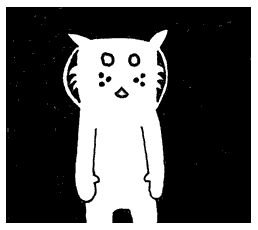
The cat Trady Blix. Frozen in emptiness. Immaculate whiskers rigid. Placid eyes of lake. Tail of warm icicle. Sponsored by a Very Powerful Pause Button.
The darkness surrounding Blix can be called negative space. Hang on to that
phrase. Let it suggest that the emptiness has a negative connotation. In a
similar way, False has a slightly sour note that it whistles.
if False: print("Hugo Boss") will never print("Hugo Boss")!
But for those of us like the dark-side, we can flip the charge with a not:
if not False: print("Hugo Boss") will always print("Hugo Boss")!
Double Equal sign
Occasionally, if will haul out the velvet ropes to exercise some crowd
control. The double equals gives the appearance of a short link of ropes,
right along the sides of a red carpet where only matches can be admitted.
Can you guess how it works? Here, check it out:
Note the expression my_cat_name == "Blix" is not assigning but comparing the two utilizing ==, the equality operator.
The double equals is simply an equality check. Do the gentleman at both ends of this rope appear to match?
If both sides are an exact match, you get in:
Now, do you remember what you need to do to dominate in Python?
Use the answers the operators give you.
In the above, how is the == operator being used?
Let’s say the aproaching_guy is set to "John". The statement evaluates to "John" == "Kevin". This will fail every time. No match. When there’s no match, the double equals method answers with false. A shake of the head. That answer is given to if, who can’t accept a false. The print never sees realization.
But approaching_guy set to "Kevin", there is a match!
True whenever approaching_guy is set to "Kevin". Match. Kevin is allowed through the short link of rope.
We can even compare a variable with True, but with Python, it's not necessary.
is the same as
Truthiness
Now, here's a strange little secret. Python isn't nearly as obsessed with True
and False as you might think.
Python also has a useful idea called truthiness. When Python expects a condition, many values can behave like True or False.
Checking for truthiness is a rather useful shortcut to check if a container is non-empty or an integer is non-zero.
For instance, we can check a list for instance with an if statement to make sure it's not empty:
Is easier than explicitly asking:
Truthiness makes for much cleaner and readable code and makes the Python language feel wonderfully natural!
By the way, we can check if a integer value is non zero with this same trick:
Why Truthiness Rules
Generally speaking, almost everything in Python has a positive charge to it. This
spark flows through strings, numbers, regexps, all of it. For example, all of the following wear the white cloak of truth: True, 8, "Kevin", [1,2,3], str, and {1:"cat",2:"dog"}.
You can test that charge with an if keyword without using an operator. (Just like def and for code blocks, indented code indicated inside of the if statement.)
Or try this solo example:
If plastic_cup is True, 4, "a non-empty string", ["a list"], {1:"dict"}, or any other truthy object, you'll see the message "Plastic cup is on the up 'n' up!".
Most everything is Python is True. Use built-in bool to test if you are unsure.
Falsiness
Only a few keywords wear a shady cloak of darkness: None, False, zero, and empty containers like "",[],(),{}, all draggin’ us down.
Continuing the above example:
If plastic_cup contains None, False, zero, or an empty container, you won’t see anything print to the screen. They’re not on the if guest list. So if isn’t going to run
any of the code it’s protecting.
But None, False, zero, and empty containers need not walk away in total shame. They may be of questionable character, but if followed by not caters to the bedraggled. The if not
keywords have a policy of only allowing those with a negative charge in.
Who is on the negative guest list? The falsey (evaluating to False) values None, False, zero, and empty containers.
You can also use if and if not in a single line of code, if
that’s all that needs to get done.
if plastic_cup: print("Yeah, plastic cup is up again!")
if not plastic_cup: print("Hardly. It's down.")
And another nice trick: use and or or to add a variety of tests.
This trick is a gorgeous way of expressing, Do this only if a is true and b isn’t true.
Truth testing is not just for an if condition. We can also test truth value with a while condition. The loop will run as long as the countdown is truthy e.g. non-zero. But as soon as it hits zero, it exits.
cnt_down = 10
while cnt_down:
print(cnt_down)
cnt_down = cnt_down - 1
print("Blastoff! Plastic cup is going up!")
Full list of falsey values
None is falsey (evaluating to False), just as 0 (integer), 0.0 (float), 0j (complex), and empty collections like "", [], or {}. Often None is a very useful case that we can test for.
The following is a complete list of values considered falsey and will evaluate to False when tested in an if statement:
Constants
- False
- None
Numbers
- 0
- 0.0
- 0j - complex zero
- Decimal(0)
- Fraction(0, 1)
Sequences and Collections
- "" - empty string
- b"" - empty bytes
- bytearray() - empty bytearray
- [] - empty list
- () - empty tuple
- {} - empty dict
- set() - empty set
- frozenset() - empty frozenset
- range(0) - empty range
We can confirm what empty strings, empty list, and zero are falsey using bool:
Again, I Want You to Dominate
Let's take an example, setting email based on my location.
at_hotel = True
if at_hotel:
email = "why@hotelambrose.com"
else:
email = "why@drnhowardcham.com"
print(email)
In the case of at_hotel being True, Python assigns my Hotel Ambrose email address to email. If at_hotel is False, my e-mail address at Dr. N. Howard Cham’s office is assigned, where I take my apprenticeship.
Above we checked for truthiness if at_hotel, but for the darkness lovers, we can check for falsehood first.
You can also use an if expression to choose between two values in a single line:
This does just the same as the above code, but in just one line.
Using a fallback value
There is one more way we could write this code, with a fallback email address set before the if, instead of using else.
We set my email as why@drnhowardcham.com (default email because I am known to always be at the office). When I finally returned to the hotel, and at_hotel becomes True , then we update the email.
Now, here’s a real question: what if at_hotel is None in the above example? Which address
is set? None evaluates to False. So the fall back email is used "why@drnhowardcham.com".
Let's go ahead and create a plan handle None in a more elegant manner than guessing.
if at_hotel is None:
email = ""
print("No clue if he's in the hotel.")
elif at_hotel:
email = "why@hotelambrose.com"
print("Definitely in.")
elif not at_hotel:
email = "why@drnhowardcham.com"
print("He's out.")
else:
print("The system is on the freee-itz.")
You can see None here means we are not sure where he is. The code at_hotel is None asks “Are you None? Are you without information?” Because we don't know, we assign my email to an empty string.
If at_hotel does not match with None, we go through the rest of the remaining elif blocks. We check for a positive charge (truthy: True, non-empty lists, non-empty strings, etc.), check for a negative charge (falsy: False, empty lists and empty strings, etc.), and finally an else.
Note: it's a good habit to use else statements, but the else code is unreachable here. We've already checked for None (first branch), truthy (second branch), and falsy (third branch) - there's no more possibilities! The "freee-itz" message is dead code that is never reached.
If you’re doing okay at this point, then you’re in tip-top shape for the rest of the book. You have seen some pretty tough code in the last few examples. You strong fellow.
Note, that in the previous example if at_hotel was set to None, when we try to send an email, we will get an error. So we need to double check the email is not empty. We can use truthiness for this test:
Because email is falsy, Python treats it as False and runs the else block. The same would happen if email were an "", empty list, 0, or False.
Challenge: Make your own if statement
Create an if statement for three places you go and assign an email for each. These can be places like the gym, work, and home. Use a separate boolean variable for each location e.g. at_gym, at_work, and at_home, assigning each a value of True or False based on your current location. If you don't have a gym email address, just make one up.
Hint!
Did you remember the colon that comes after the if statements?
3. Chaining Delusions Together
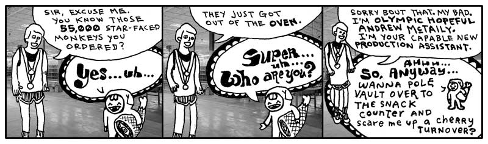
You finish reading the above comic and retire to your daybed for reflection. It’s one of those canopy affairs which is always logjammed with pillows. You sit atop the pile, gazing out upon the world. You see the tall smokestacks belching wide spools of fume and haze. The tangled concourses of freeways smattered with swift, shimmering traffic is but a gently pulsing eye muscle from your vantage point.
It is all so fantastic. How the colors of the horizon spread across the landscape as a great mix of butter and grease with a tablespoon of vanilla extract.
Yet, for all of the beauty which beckons for your attention, the images of the Elf and his Olympic Hopeful return. And more especially, that order for 55,000 starmonkeys. 55,000 starmonkeys, you think. Fifty-five Thousand.
You think of just the number itself. 55,000. It’s walking down a road. It might be in a forest, you don’t know for sure as your eyes are fixed right on the number itself. It’s stopping and talking to people. To tennis players, to a men’s choral group. There is merriment and good feeling. When it laughs, its lower zeros quiver with glee.
You want to talk to it. You want to skip along that forest trail with it. You want to climb aboard a jet bound to Brazil with it. And after five days and four nights at the leisureful Costa do Sauipe Marriott Resort & Spa, to marry it, to bear a family of 55,000 starmonkeys with it. To take possession of Nigeria with it.
With a flying leap, you dismount your pillow tower of isolation. Scrambling with the key, you unlock your roll top desk and pull out a sheet of paper, holding it firmly upon the desk. You begin scribbling.
Take possession of Nigeria with my new 55,000 starmonkeys... Over it, build Nigeria-sized vegetarians only casino and go-cart arena... Wings… we could have our own special sauce on the wings that’s different... Mustard + codeine = Smotchkkiss’ Starry Starmonkey Glow Sauce... Franchise, franchise… logos... Employee instructional videos... When you give the customer change, let them reach inside the frog on your hand to get it... If they have no change, at least put their reciept some place where they have to touch the frog... We’re leveling the playing field here... Advertise cheap pizza, let’s make our money off soda... Collect all 4 frosted glasses...
Wow, the ideas are really coming out. You literally had to smack yourself to stop. We need to put these in a safe place. Actually, we should store them on your computer and mangle the words. You look out the window and watch for FBI. I’m going to start this script.
The Angry Script
Let this script be your confidante. It will ask for angry plans and puts the whole rant in an all-caps.
The input function is built into Python like
print. This method input will pause Python to let you type. When you hit Enter,
input will then stop paying attention to your keyboard punchings and answer back
to Python with a string that contains everything you typed.
The upper method is then used on the string that input is giving back. The
upper method is part of the str (string) class. Which means that anything
which is a string has the upper method available. More on classes in the
next chapter, for now just know that a lot of methods are only available for
certain types of values e.g. string has upper, list has append, etc.
I don’t think upper is going to cut it to get their attention. The authorities
need to feel the “Angry Ranting” before the starmonkeys start can touch down in
Lagos.
Maybe if we uppercase all letters in the string that will get their attention and add exclamation points at the end!!!
3 exclamations means serious business. Now “Angry Ranting” becomes “ANGRY RANTING!!!”
Your Repetitiveness Pays Off
You hand me a legal pad, doused in illegible shorthand. Scanning over it, I start to notice patterns. That you seem to use the same set of words repeatedly in your musings. Words like starmonkey, Nigeria, firebomb. Some phrases even. Put the kibosh on. That gets said a lot.
Let us disguise these foul terms, my brother. Let us obscure them from itching eyes that cry to know our delicate schemes and to thwart us from having great pleasure and many go-carts. We will replace them with the most innocent language. New words with secret meaning.
I start up a word list, a Python Dictionary, which contains these oft seen and
dangerous words of yours. In the Dictionary, each dangerous word is matched up against
a code word (or phrase). The code word will be swapped in for the real word.
CODE_WORDS = {
'starmonkeys' : 'Phil and Pete, those prickly chancellors of the New Reich',
'catapult' : 'chucky go-go', 'firebomb' : 'Heat-Assisted Living',
'Nigeria' : "Ny and Jerry's Dry Cleaning (with Donuts)",
'Put the kibosh on' : 'Put the cable box on',
'Hammer' : 'Technology'
}
The words which are placed before a colon are called keys. The words after
the colon, the definitions, are often just called values. The colon
is just like a tiny two-dot bridge that lies between keys and their meanings.
Notice the double quotes around Ny and Jerry's Dry Cleaning (with Donuts).
Since a single quote is being used as an apostrophe, we can’t use single quotes
around the string. (Although, you can use single quotes if you put a backslash
before the apostrophe such as: 'Ny and Jerry\'s Dry Cleaning (with Donuts)'.)
Should you need to look up a specific word, you can do so by using the square brackets method.
CODE_WORDS['catapult'] will answer with the string 'chucky go-go'.
Look at the square brackets as if they are a wooden pallet with a label on it.
The label on this particular pallet is 'catapult'. A forklift could slide its prongs into each
side of the pallet and bring it down from a shelf back in the warehouse. The label on the pallet is
the key (what we placed before the colon e.g. 'catapult' : 'chucky go-go'). We are asking Python to find that key and bring
back its corresponding value (what we placed after the colon e.g. 'catapult' : 'chucky go-go').
If you’ve never been to a warehouse, you could also look at the brackets as handles. Imagine an industrious worker putting on his work gloves and hefting the key back to your custody. If you’ve never used handles before, then I’m giving you about thirty seconds to find a handle and use it before I blow my lid.
As with many of the other operators you’ve seen recently, the brackets are a shortcut. We can also use a method to do the look up in a similar way.
CODE_WORDS.get('catapult') will also answer with the string 'chucky go-go'.
Spy games and Dictionaries
If a list is like a neatly organized drawer, a dictionary is like a filing cabinet with a built in secretary. You don't ask your secretary for the second item in the cabinet, you ask him or her, "get me the file on the Antarctica project". That is you ask for a key and get the corresponding value.
Now that you’ve compiled your CODE_WORDS, let's play around with them using dictionary lookup.
You state the dictionary name, followed by square brackets with the [key] you want (the dangerous word) and the dictionary returns the corresponding value (the code word).
Now, let's go ahead and make our own person dictionary with a key value pairs, providing the dangerous word as the key and the code words as value e.g. dictionary[key] = value.
>>> CODE_WORDS = {}
>>> CODE_WORDS['billy goat'] = 'bills'
>>> CODE_WORDS['Doctor cham'] = 'sister patrice'
>>> CODE_WORDS['cactus'] = 'grapefruit'
>>> CODE_WORDS["owl"] = '72 freckles'
The new values will show up in our dictionary.
>>> print(CODE_WORDS)
{'billy goat': 'bills', 'Doctor cham': 'sister patrice', 'cactus': 'grapefruit', 'owl': '72 freckles'}
We can event print the new individual coded words (values), by giving our dangerous words as a keys:
Dictionaries is a powerful data type in python when you want to store more than just the same items over and over. Dictionaries flexibility holds its power.
Did I mention you can even nest dictionaries!?
supplies = {}
supplies["olive oil"] = {"can":"shelf 1", "bottle":"shelf 2"}
print(supplies["olive oil"]["can"])
# Output: "shelf 1"
Challenge: Fill in the blank for these dictionary keys
We want to use a dictionary named hero. Complete the missing code marked with ___ such that the dictionary asks for the correct key and prints the corresponding values.
Code
hero = {
"name": "Aria",
"class": "Mage",
"inventory": ["Staff", "Health Potion", "Spellbook"],
"stats": {"hp": 100, "mana": 150}
}
# 1. Extract the hero's "class"
hero_class = hero[___]
# 2. Get Aria's "inventory"
inventory = hero[___]
# 3. Increase Aria's "mana" by 50
hero[___]['mana'] += 50
print(f"{hero["name"]} the {hero_class} now has {hero["stats"]["mana"]} mana and is holding a {second_item}.")
Making the Swap
I went ahead and saved the Dictionary of code words to a file called wordlist.py.
To follow along, just create a wordlist.py, place the "CODE_WORDS = { ..." text in the file, and save it in your working directory (or download directly from the link above and save it to your working directory).
CODE_WORDS = {
'starmonkeys' : 'Phil and Pete, those prickly chancellors of the New Reich',
'catapult' : 'chucky go-go', 'firebomb' : 'Heat-Assisted Living',
'Nigeria' : "Ny and Jerry's Dry Cleaning (with Donuts)",
'Put the kibosh on' : 'Put the cable box on',
'Hammer' : 'Technology'
}
-
If you are using Python Shell: double check your current directory is the same as where you saved wordlist.py by running the following commands:
-
If you are using an IDE, set your current directory to where you saved wordlist.py (click view -> Files and select a diretory in Thonny).
from wordlist import CODE_WORDS
# Get evil idea and swap in code words
idea = input("Enter your new idea: ")
for real, code in CODE_WORDS.items(): #loop over codes
idea = idea.replace(real, code)
# Write the gibberish to a new file (overwrites file if already there)
idea_name = input("File encoded. Please enter a name for this idea: ").strip()
with open(f"idea-{idea_name}.txt", "w", encoding="utf-8") as f: # Opens file and auto closes when finished
f.write(idea)
Our script starts by pulling in our word list. Importing the file allows us an easy way to access the CODE_WORDS dictionary. Like if and for, import is a Python keyword that acts as a porter for accessing the file.
The statement from wordlist import CODE_WORDS goes searching for a module named wordlist, which is usually a file called wordlist.py (we'll get into modules in more detail in the next chapter).
Do you see those # after the code? That signifies a comment in Python. Anything after # is completely ignored. This is useful to include documentation, notes and expected responses. In this books, we typically use comments to include notes and expected responses after a line of code.
After that, there are two sections. I am marking these sections with comments, the lines that start with pound (#) symbols. Comments are useful notes that accompany your code. Folks who come wandering through your code will appreciate the help. When going through your own code after some time has passed, comments will help you get back into your mindset.
I like comments because I can skim a big pile of code and spot the highlights.
The comments tell us that the first section asks you for your evil idea and swaps in the new code words. The second section saves the encoded idea into a new text file.
You see the for method? The for method is all over in Python. It’s available
to use with Lists, Dictionaries, even Strings. Here, our CODE_WORDS dictionary
is kept in a Dictionary. This for method will hurry through all the pairs of
the Dictionary, one dangerous word matched with its code word, handing each coded
pair to the replace() method for the actual replacement.
In Python, replace() is used to search and replace. Here, we want to find all the
occurrences of a dangerous word and replace with its safe code word. With replace(),
you provide the word to find as the first argument, then the word to put in
its place as the second argument.
Why do we have to assign the answer of replace() method back to the variable idea?
Shouldn't replace already replace the text? You might think the line would read:
idea.replace( real, code ) without assignment. But with string methods we always need to hang on to its answer. When a method is done, we return a newly altered string and need to catch it. Finally, when you assign it to idea, you overwrite the old string.
Remember in Python strings cannot change. They are fixed. Python does not have a change-in-place string methods. Instead, any string method returns a fresh (new born) string, leaving the old string alone (the miracle of life).
** Save the Ideas of a Madman to file**
Let us now save the encoded idea to a file. (Yes, we are still doing this spy stuff.)
# Write the gibberish to a new file (overwrites file if already there)
idea_name = input("File encoded. Please enter a name for this idea: ").strip()
with open(f"idea-{idea_name}.txt", "w", encoding="utf-8") as f: # Opens the file and automatically closes it when finished
f.write(idea)
This section starts by asking you for a name by which the idea can be called. This name is used to build a file name when we save the idea.
The strip method is for Strings. This method trims spaces and blank lines
from the beginning and end of the string. This will remove the Enter at
the end of the string you typed. But it’ll also handle extra spaces if you
accidentally left any.
After we have the idea’s name, we open a new, blank text file. Normally, we would check the
filename to make sure the user hasn't slipped a path or other troublesome characters into
idea_name, but for our example, we'll trust the user, which is ourselves. The file name
is built by adding strings together. If you typed in 'mustard-plus-codeine', then
our math will be: 'idea-' + 'mustard-plus-codeine' + '.txt'. Python presses
these into a single string. 'idea-mustard-plus-codeine.txt' is the file.
We’re using the function open to open up the file object stream. Up until now, we’ve
used several built-in functions to do our work. We hand the print method a
string and it prints the string on your screen. One secret about built-in functions
like print: they are all stored inside a hidden module called builtins. You can
call them explicitly by writing builtins.print() instead of just print().
What does this mean? Why does it matter? It means builtins is at the center of Python’s universe.
Wherever you are in your script, builtins is right beside you. You don’t even need to spell builtins
out for Python. Python knows to check there.
Most functions are more specialized than print() or input(). Take open(), for example. It opens a file and returns a file object. The creator of Python, the handsome Guido van Rossum, gave us built-in tools for working with files, allowing us to open, read, write, and close files from the
earliest versions of Python.
-
content = f.read()reads the entire file and returns a string containing all of its text. -
f.write(idea)writes the contents ofideato the file. -
f.close()closes the file.
There is an important distinction here. open() is a built-in function, so you can call it without
importing anything. But read(), write(), and close() are methods of the file object returned by open().
These file-object methods are part of Python’s built-in file-handling machinery, provided by the
io module. They are some of Python’s core tools for working with streams of data.
So, while you can safely call built-in functions such as print(), input(), and open(),
you’ll need to open() a file and get a file object before you
can use methods such as read(), write(), and close().
idea_name = input("File encoded. Please enter a name for sassy ideas file: ").strip()
with open( 'sassy_ideas-' + idea_name + '.txt', 'w', encoding="utf-8") as f: # Opens the file and automatically closes it when finished
f.write(idea)
# File automatically closes here
We pass three arguments into open. The first is the file name to open. The second is a string
containing our file mode. We use 'w', which means to write to a file (creating or overwriting).
The third argument is the encoding type. We are using "utf-8" which is a good default encoding to use, as it handles characters from many (human) languages. Encoding simply tells Python how to translate the text into bytes when it saves the file.
Some other file mode options are:
'x'to write without overwriting existing files,'r'to read from the file, and'a'to add to the end of the file.
The file is opened for w or writing and we are handed back the file in variable f,
which can be seen sliding down the chute into our with Context Managers.
Inside the context manager, we write to the file. When the context manager
finishes, our file is closed as well automatically.
Challenge: Make your own secret dictionary of CODE_WORDS
To start, remove any old idea-*.txt files from your current directory by selecting them and hitting the delete key or running this clean up script in your working directory.
import glob
import os
# Find all files matching the pattern and delete them
for file_path in glob.glob("idea-*.txt"):
os.remove(file_path)
Now, take pen to paper and come up with your own ideas of what you might do with 55,000 starmonkeys. Create a CODE_WORDS dictionary to replace your best ideas with code speak so no one can steal them for you.
For example, if your ideas is a tie with built-in pencil holder, you might use a dictionary like so: CODE_WORDS = {"built-in pencil holder" : "banana hammock", ...}. Or if you had an idea for a dark-matter door, you might add an element { "dark-matter" : "water-powered", ...}.
Once you dictionary is done, save your CODE_WORDS in a wordlist.py and run the above code swapping script. it will ask you to for your ideas (type in the ideas you had written down on paper) and then give it an idea_name for your output idea-{idea_name}.txt.
Check the output file for your coded ideas. Your ideas will be kept safe from prying eyes. Only those with wordlist.py can decode the file.
Settle Down, Your Ideas Aren’t Trapped
Here, let’s get your ideas back to their original verbiage, so you can ruminate over their brilliance.
from glob import glob
# Assuming your personal CODE_WORDS is defined in a file wordlist.py
from wordlist import CODE_WORDS
# Print each idea out with the words fixed
for file_name in glob("idea-*.txt"):
with open(file_name, "r", encoding="utf-8") as f:
idea = f.read()
for real, code in CODE_WORDS.items(): #decoding the encoded message
idea = idea.replace(code, real) # replace the code word with the real word.
print(idea)
By now, you should be up to snuff with most of this example. I won’t bore you
with all of the mundane details and the for loop is almost the same as when we encoded the ideas, but here we replace the code words with the real ones. See if you can figure out how it works on your own.
But what's this stuff with glob at the top of the loop: glob("idea-*.txt")?
The glob function is a scruffy, over-eager bloodhound living inside Python’s glob module.
The glob function searches a directory for files.
When you think of glob, think of a globe and spinning a spherical map to search the
whole folder for your files. Can you start to see the shiny, glinting gorgeousness of Python?
So with glob("idea-*.txt") we’re using glob to get files in the current directory which match 'idea-*.txt'. The glob method uses the asterisk as a wildcard. We’re
basically saying, “Match anything that starts with idea- and ends with
.txt.” The globe spins off to the directory and comes back with a list
of all matching files. That list of files glob returns will come in the form of List, with a
String for each file found.
Guess what glob is doing?
Here we check the current directory, write out some reports and then perform a glob search. Try and guess what the glob is searching for before running the code yourself.
from pathlib import Path
from glob import glob
# Get and print the current working directory
print(Path.cwd())
with open("report_1.txt", "w", encoding="utf-8") as file:
file.write("hello")
with open("report_3.txt", "w", encoding="utf-8") as file:
file.write("there")
with open("report_4.txt", "w", encoding="utf-8") as file:
file.write("why")
reports = glob("report_[123].txt")
print(reports)
If you are still curious and want to play more with your glob, try these in Python shell:
>>> from glob import glob
# 1. Get all files and folders in the current directory
>>> print(glob('*'))
# 2. Get all .txt files in a specific folder
>>> print(glob('documents/*.txt'))
# 3. Looks for `document.txt` file in current directory
>>> print(glob("document.txt"))
# 4. Looks for all txt documents in the current directory
>>> document = glob("*.txt")
# 5. Searches your current directory and every single folder inside it to find all files ending in `.pdf`.
>>> all_pdfs = glob("**/*.pdf", recursive=True)
4. Pizza and Clubbing
Pizza double time with List Comprehensions
So back in my youthful days, we like to get a slice of pizza where my friend Johnson works for hitting the town. He always hooks his good friends up with double toppings.
He's been double topping some of his friends and those friends have become regulars.
Boss calls him in one day. "Whys don't we try doing that for everyone smart guy. Get some more regulars." he tells Johnson.
So Johnson did just that by adding some custom double topping promo to the order printer code.
He started to write a for loop looping over the orders and adding double to each of them, but boss wanted to run the promotion stat. So Johnson decides to use list comprehension. With list comprehension, what takes a for loop multiple lines to do, can be done in just one line. Fire up list comprehension the conveyer belt, and updated order come in double time!
pizza_orders = ['chunky bacon','sausage','cheese','mushroom', 'margarita']
promo_pizza_orders = ['double ' + pizza for pizza in pizza_orders]
The above list comprehension reads from right to left like so: "for each pizza in pizza_orders, add to the list: 'double ' + pizza". The list comprehension reduces three lines with a for loop to a single line of code!
The equivalent for loop would look like this:
pizza_orders = ['chunky bacon','sausage','cheese','mushroom', 'margarita']
promo_pizza_orders=[]
for pizza in pizza_orders:
promo_pizza_orders.append('double ' + pizza)
The list compression aren't just shorter, but they are often faster and easier to understand than for loop when you get a hang of them.
Conditioning our lists
We can also add more complex condition logic, making a list comprehension more powerful .
There are two main ways to do this, filtering with if OR modifying with a conditional expression. Filtering adds the if to the end. Modifying uses a conditional expression at the beginning.
-
Filtering:
[p for p in pizza_orders if "bacon" in p]# all pizza orders with bacon related toppings -
Modifying with Conditional Expression:
['gross, try again' if 'hawaiian' in p else p for p in pizza_orders]# reject all hawaiian pizza orders
Orders came in steady for our double topping pizzas, but soon we were low on toppings.
Boss asks "How's many chunky bacon orders we's got, why?" Too many to count by hand! So I fired up the old Python and started counting orders using a handy list comprehension, find the length, and let the Python snake take care of it!
promo_orders = ['double chunky bacon','double prosciutto','double sausage','double cheese','double mushroom','double chunky bacon', 'double cheese','double prosciutto', 'double meat lovers']
count_chunky = len([p for p in promo_orders if p.endswith("chunky bacon")]) # count chunky bacon orders
Challenge: Change double to lil extra to save money
Boss pulls me aside later that day "Johnsin, we can't just be giving away Prosciutto. Chunky bacon, okay, but this Prosciutto is imported from Tuscany, fuuggetaboutit. Give em a lil' extra this time, capisce?"
Prosciutto was robust, savory and had to be protected with a modifying conditional expression.
"While you are at it, we are out of chunky bacon, so remove those orders!"
Write a list comprehension that replaces 'double' with 'lil extra' for an double prosciutto pizza order and returns a updated list with only the promo_orders. While you are at it, remove any 'chunky bacon' from the promo_orders list.
We can start with the same list of pizza orders:
promo_orders = ['double chunky bacon','double prosciutto','double sausage','double cheese','double mushroom','double chunky bacon', 'double cheese','double prosciutto', 'double meat lovers']
Make sure the 'double prosciutto' get replaced with lil extra prosciutto, 'double chunky bacon' get nixed, and all the other pizza orders stay the same.
Hint!
A list comprehension begins with a for. In this case [... for p in promo_orders ...]
Now, replace double with lil extra on the left end of the list comprehension using replace(). Use a conditional expresion (modifying) to only apply this replace command to 'prosciutto' orders e.g. if 'prosciutto' in p, else we give back the original value.
Last, create a filtering if statement to select only orders that do not contain 'chunky bacon'. Add this a the right end of list comprehenion.
Answer
Now as a reward for completing the double toppings code the boss offers you a pizza joke:
Why did the toppings have to squeeze together on the pizza?
There wasn't mush-room!
The lambda club
Now, my friend Jimothy doesn't like chunky bacon pizza but loves clubbing after getting pizza. He goes on and on about the hottest new club that has no name, but all I want to do is go home and watch Batman reruns, eat pickles, and play with my cat Blix.
_why: "What's the place called?"
Jimothy: "Ain't go no name. It's here today, gone tomorrow. It won't stick around long enough to bother with names. Kinda reminds me of my dad. Maybe that's why I party so much?"
So after a good cry, we settled on using a little party hat symbol to represent the nameless club. λ or lambda, the 11th letter in the Greek alphabet, looks just like a party hat when you have had 6 soco and limes. The lambda club was born.
A lambda function is a short, anonymous function that you can create on the fly without giving it a formal name. Think of it as a quick, single-use shortcut for performing simple calculations or sorting data without writing a full block of code.
Where does lambda really come from?
This book is filled with many truths, but I hate to break it to you, there is no lambda club in real life (or at least if there is, you aren't invited to it).
The word lambda in programming languages originally comes from Alonzo Church’s Lambda Calculus, invented in the 1930s. In his notation, the Greek letter lambda (λ) denotes binding a variable in a function. A function like f(x) = x + 2, was written as λ x . x + 2. This translates to "a function that takes x and returns x + 2.
Let's just say lambda is a alternative way to define functions that you don't plan to reuse:
Normally we define a function like so:
A lambda is the same idea, just written as an expression.
Here are a few examples:
square = lambda a: a ** 2
# Read it aloud: a function square takes in a and squares it.
cry = lambda x, y: x - y`
# Read it aloud: a function cry takes in x and y and gives back x-y.
feel = lambda x, y: x * y`
# Read it aloud: a function feel takes in x and y and gives back x*y.
dougie = lambda x, y: x ??? y`
# Throws SyntaxError because Python 3 (nor I) is not sure how to do the Dougie, check back with Python
We use our functions like so:
We can also call a lambda function directly without assigning a strange name using parentheses:
Partying at the club
So Jimothy and _why head to the lambda club. Inside, they find a tiny dance floor that appears every evening and vanishes before sunrise.
Jimothy & _why party hard
"What sorcery did you use to conjure a party out of thin air!?"
"I just defined a lambda function and called!" replies Jimothy.
"Oh wait, we are just defining a function, similar to how we did before with def?" answered _why.
def anon_club(a, b):
return f"{a} & {b} party hard"
print(anon_club('Jimothy', '_why')) # Jimothy & _why party hard
"Yup. Here we see a function defined the traditional way. It has three parts, the function name, parameters, and code," says Jimothy. "The difference is that a lambda is usually a temporary worker. You use def for functions you'll reuse. You use lambda for quick jobs that only need doing once, so it just takes parameters and code"
"In fact, we can create the function and call it immediately without using a name:"
"The first parentheses contain the lambda function. The second contain the arguments. I, 'Jimothy' become, a, '_why' becomes b," says Jimothy.
_why nods his head to the beat of the music.
"Next, the expression after the colon gets evaluated:"
Output:
Jimothy & _why party hard
"The lambda club appears one night with its tiny dance floor, throws a quick party (look at us dancing in there), and disappears into the night."
5. The Miracles of Sorted
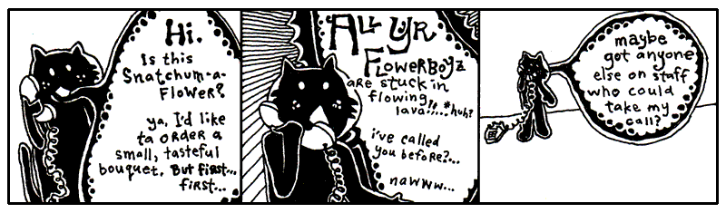
Since you and I are becoming closer friends as we share this time together, I should probably let you in on a bit of the history going on here. It’s a good time for a break I say.
First, you should know that Blix is my cat. My second pet to Bigelow. Granted, we hardly see each other anymore. He’s completely self-sufficient. I’m not exactly sure where he’s living these days, but he no longer lives in the antechamber to my quarters. He emptied his savings account about seven months ago.
He does have a set of keys for the house and the Seville. Should he ever find himself stranded, I will gladly step away from our differences and entertain his antics around the house again.
Make no mistake. I miss having him around. Can’t imagine he misses my company, but I miss his.
A Siren and A Prayer
I first saw Blix on television when I was a boy. He had a starring role on a very gritty police drama called A Siren and A Prayer. The show was about a god-fearing police squad that did their jobs, did them well, and saw their share of miracles out on the beat. I mean the officers on this show were great guys, very religious, practically clergy. But, you know, even clergymen don’t have the good sense to kill a guy after he’s gone too far. These guys knew where to draw that line. They walked that line every day.
So, it was a pretty bloody show, but they always had a good moral at the end. Most times the moral was something along the lines of, “Wow, we got out of that one quick.” But there’s serious camaraderie in a statement like that.
The show basically revolved around this one officer. “Mad” Dick Robinson. People called him Mad because he was basically insane. I can’t remember if he was actually clinically insane, but people were always questioning his decisions. Mad often blew his top and chewed out some of the other officers, most of whom had unquestionable moral character. But we all know it’s a tough world, the stakes are high out there, and everyone who watched the show held Mad in great regard. I think everyone on the squad grew quite a bit as people, thanks to Mad’s passion.
The officers couldn’t do it all themselves though. In every single episode, they plead with a greater force for assistance. And, in every single episode, they got their tips from a cat named Terry (played by my cat Blix.) He was just a kitten at the time and, as a young boy tuning into A Siren and A Prayer, I found myself longing for my own crime-sniffing cat. Terry took these guys down the subway tunnels, through the rotting stench of abandoned marinas, into backdoors of tall, industrial smokestacks.
Sometimes he was all over an episode, darting in and out, preparing traps and directing traffic. But other times you wouldn’t see him the whole episode. Then you’d rewind through the whole show and look and look and look. You’d give up. He can’t be in that episode.
Still, you can’t bear to let it go, so you go comb through the whole episode with the jog on your remote, combing, pouring over each scene. And there he is. Way up behind the floodlight that was turned up too high. The one that left Mad with permanent eye damage. Why? Why burn out the retinas of your own colleague, Terry?
But the question never got answered because the series was cancelled. They started to do special effects with the cat and it all fell apart. In the last episode of the show, there is a moment where Terry is trapped at the top of a crane, about to fall into the searing slag in the furnace of an iron smelt. He looks back. No going back. He looks down. Paws over eyes (no joke!), he leaps from the crane and, mid-flight, snags a rope and swings to safety, coming down on a soft antelope hide that one of the workers had presumably been tanning that afternoon.
People switched off the television set the very moment the scene aired. They tried changing the name. First it was God Gave Us a Squad. Kiss of Pain. Then, Kiss of Pain in Maine, since the entire precinct ended up relocating there. But the magic was gone. I went back to summer school that year to make up some classes and all the kids had pretty much moved on to football pencils.
A couple years after the show went off the air, I adopted Blix and started teaching him about Python.
“Well, people say lambda functions can be difficult to understand,” Blix said.
“They’re not difficult,” I said. ““A lambda is a compact little function-making machine. It often appears for one quick job, though you can keep it around if you insist on adopting it.”
Blix began licking his fur, ignoring me.
I added, "Just like a function, with lambda we have arguments that are passed in and the function code or expression that gets evaluated. Just like a function, we use a colon to separate the two."
Blix shook his head not understanding anything.
"For lambda x: x.lower(), we could read it as take x and give back lowercase x.
You try to read this function."
"Umm. take x and give back x times 2. Seems dumber than Mad Dick Robinsons."
"Exactly. Why not just write 4*2? Well Lambda is useful as a shortcut when we want to multiply numbers by two many times."
times_by_two = lambda x: x * 2
times_by_two(1) # gives 2
times_by_two(2) # gives 4
times_by_two(3) # gives 6
times_by_two(8) # gives 16
"That seems awfully...silly? Why not just define a function or better yet, use a list comprehension?" said Blix.
"Ah, you mean like this? [n*2 for n in [1,2,3,8]]?"
"Yes! That seems like a less dumb way to double a bunch of numbers."
"Yes, but the power of the lambda function comes when you just want to make a quick one-off calculation. It works like a disposable function, that you use once and never use again. Think of it like one pocket-sized trick, for small expressions. If you need a suitcase full of statements, give it a proper def.”
"Like a one night stand?" asked Blix.
"Well, I guess you could think of it like that but lambda is more powerful than that. It can even be passed in to other functions...”
"Yeah, yeah, suitcase. Right... but getting back to one night stand, I have a perfect use case!"
"What?"
"You know, helping me find a date. Can you help me narrow them down these profiles to you know... profiles that are open minded. For the one night stand."
"You misunderstood. I don't think lambda was meant for that..."
"Just make with the code already!"
# Some of Blix's matched profiles
profiles = [
"Looking for something casual, fun dates, and picnics and lasagna.",
"I'm looking for marriage and a litter of kittens. Only serious cats please.",
"I'll be visiting the neighborhood so short-term works great!",
"I am looking for Mr. Purfect. He needs to have all his shots."
]
# Define the lambda function rule
key_words = ("casual", "short-term", "easy")
is_open_to_hookups = lambda bio: any(word in bio.lower() for word in key_words)
# Test profiles for tags by running the lambda function and print the results
results = filter(is_open_to_hookups, profiles)
print(list(results))
"Hmm. lambda bio:? What's that...? Well, did I get any matches?" Blix said nodding.
"Blix, let's try to understand the code first. The lambda function takes in an argument bio and checks if the words casual or short-term are in the bios. We then apply this to your list of potential suitors / suitresses using filter to filter and return the matches, and voilà, we get a list of... eligible mates."
"I see, I see... this thing will really amp up my dating life!" said Blix pressing the pads of his fingers together.
"Python helping someone's dating life? First time for everything I guess."
When we got to this part this part of the lessons, Blix said to me, “Lambda functions remind me of Mad Dick Robinson who was always good with the ladies.”
“Oh?” I hadn’t heard that name in a while. “I can’t see how that could be.”
"Now, Mad was just an officer, sworn to uphold his duty,” Blix said. “But he was a real miracle to watch out in the field and outside work as well. Do you remember Mad Dick's famous lines he used to pick up his love interests? Maybe I can use some of those lines on my dates?"
I wrote an example down for him using lambda.
re_wire = lambda x, y: x.replace("Mad Dick", y)
blix_line_1 = re_wire("Mad Dick: Do you why call me Mad Dick? It's not because I'm angry.", "Blix")
print(blix_line_1)
"That's a terrible line! And it doesn't make any sense after changing the names," Blix shook his head.
"Well the show was from the 70s, a different time. Let's more lines and pick one that suits you:"
re_wire = lambda x, y="Blix": x.replace("Mad Dick", y)
terrible_lines = [
"Mad Dick: You look lost. I have the map to your heart.",
"Mad Dick: Did you fall from heaven? Because you are hot.",
"Mad Dick: Hey there are you a fire alarm? Because I'm Mad Dick and I'd pull you right now."]
blix_lines = list(map(re_wire, terrible_lines))
print(blix_lines)
“You can do that? Set y="Blix"? Am I y!?" Blix asked with a worried look.
"Yes, but it's okay. We areu using a lambda function and set a parameter to 'Blix' by default and we are using map to apply a funcion on each item of a list."
"Ah I see, so lambda creates sort of placeholder function and map is calling that function for each item in the list?” he said. "Hmm, I do like the fire alarm line. No lines about chasing tail?"
"I'm afraid not."
"Okay, I get lambda, but what's this map thing do? Is it some sort of GPS system?"
"Ah, no. We're using map() to apply the lambda function to each element in the list. It's another way to loop over a list and perform the same operation on each element, collecting the results along the way."
Blix shook his head in confusion.
"Let's get back to map in a moment. What else do you need help with Blix?"
Iterating and Sorting to Save Lives
Blix looked around the room for a moment until his eyes settled on his eggroll in the corner.
“I got it! Python could help with my social life? What about my toys?" He extended a paw towards a dirty sock and then to what looked like a dead mouse across the room, with x's for eyes.
I tried to explain "That sock is mine..." but it was no use. It belonged to Blix now.
I scribbled an example on the page.
kitty_toys = [{"name": "sock", "fabric": "cashmere"}] + \
[{"name": "mouse", "fabric": "calico"}] + \
[{"name": "eggroll", "fabric": "chenille"}]
#get the fabrics
names = list(map(lambda toy: toy["names"], kitty_toys))
"The backslashes tell Python that there is more of this line to come, so that all that code is treated as if it were a single line."
Blix nods attentively.
"We could also use parentheses to spread the code across multiple lines. This looks cleaner and is the preferred approach."
kitty_toys = ([{"name": "sock", "fabric": "cashmere"}] +
[{"name": "mouse", "fabric": "calico"}] +
[{"name": "eggroll", "fabric": "chenille"}])
“This is a small miracle,” he said. “I can’t deny its beauty. Look, there are my
kitty_toys, laid out for me to see.”
Blix had also been taught the Dictionary, with curly braces on each end which look like small, open books with words in the dictionary matched up with its definition by a colon. (Be beholden: {'blix': 'cat', 'why' : 'human'}.)
“Sure, now, I apologize if your list of toys looks a bit confusing.” I said. Like you, Blix had learned about the List, the caterpillar stapled into the code, with square brackets on each side and each item separated by commas. Here is one: [1, 2, 3].
“Yes, vexing,” he said. “It has square brackets like it’s a List, but inside colons like it’s a Dictionary. I don’t think you’re going to get away with that.”
“It does seem a bit odd, doesn’t it?” I said, tease-nudging him with a spoon. “I’ve done your kitty toy list in a mix of the two. I’m using a shortcut. Which is: A bunch of Lists each with a single Dictionary inside it.“
“Oh, I see,” he said. “You criss-crossed ‘em. How neat!”
“Yes, yes, you’re on it,” I said. He was also very good with a protractor. “I have three Lists, each with a Dictionary inside. Notice the plus signs? I’m adding them into one big List."
"Here’s another way of writing it…” I jotted down.
kitty_toys = [
{"name": "sock", "fabric": "cashmere"},
{"name": "mouse", "fabric": "calico"},
{"name": "eggroll", "fabric": "chenille"}
]
A list of chew toys: or more specifically three dictionaries each
describing a toy. The first toy is described as {"name": "sock", "fabric": "cashmere"},
the second as {"name": "mouse", "fabric": "calico"} and so on. A List of Dictionaries!
"But first see this line to get the names of each toy? We are using map() to apply the lambda function to each item."
Blix nodded.
"But map() returns just an iterators, so if we want the values, we call list on it. The output? A list with just the name of each toy!"
Blix gave a big yawn in response.
"Here's an example where we use map:"
"Ah, string converted to integers... yeah, yeah." Blix continuting to yawn.
"Note, map uses lazy evaluation (one element at a time) and returns an iterator. If we want the values, we have to call list()," I said.
Blix nodded. "Oh great! And remind me, what's an iterator again?”
"You remember that episode when Mad...”
“Episode?” he said. Yeah, he can’t understand the concept of TV dramas. Yeah, I’ve tried explaining.
“Or, yeah, remember that one eyewitness account we watched where Mad was trying to talk down that crazy spelling bee contestant from the ledge of a college library?”
“I remember it better than you because I was riding in a remote control plane.” Yep, it was one of those episodes.
“Do you remember how Mad got the guy to come down?” I asked.
“People in spelling bees love letters,” said Blix. “So what Mad did was a genius move on his part. He started with the letter A and gave reasons, for all the letters of the alphabet, why the guy should walk back down the building and be safe on the ground.”
”’A is for the Architecture of buildings like this,’” I said, in a gruff Mad voice. ”’Which give us hope in a crumbling world.’”
”’B is for Big Guys, like your friend Mad the Cop,’” said Blix. ”’Guys who help people all the time and don’t know how to spell too great, but still help guys who spell really great.’”
“See, he went through all the letters, one at a time. He was iterating through them. And an iterable is anything that Python can iterate over, like a list.” It Err Ate Ing.
“But the guy jumped anyway, Why. He jumped off on letter Q or something.”
”’Q is for Quiet Moments that help us calm down and think about all of life’s little pleasures, so we don’t get all uptight and starting goofing around on tiptoes at the very edge of a big, bad building.’”
“And then he jumped,” said Blix. He shook his head. “You can’t blame Mad. He did his best.”
“He had a big heart, that’s for sure,” I said, patting Blix on the shoulder.
Blix cheered up.
"Yes! Getting back to the toys, we use map() to get the fabric for each toy in our list of dictionaries. In Python, lambda functions are often used with filter(), map(), and sorted(), higher-order functions which accept other a function as one of their arguments."
"Huh, functions that use functions? You don't say," Blix replied looking impressed.
"This is embarassing, but can you put eggroll at the top of the list? It's my favorite."
“Okay, let's sort your toys in alphabetical order, by name. Eggroll should go to the top,” I said.
“Hmm sorted? How does that work?” asked Blix.
“We know sorted() is a built-in function because we don't have to import anything. It works by taking an iterable and sorts it as instructed.”
""It Err Abl, right. But what's all that gobbledygook key= and lambda?? Not again!"
“The sorted() function here is taking two arguments. The list, an iterable, to sort is given by position and the second by keyword argument.”
"Keyword argument? The keys were fighting?"
"No, keyword argument as in the thing we pass into a function, but here we use the parameter name e.g. arg_name="Blix" instead of position. This is helpful when we have many optional arguments."
Blix nods.
"For a simple list, we don't need a key= as by default Python sorts elements in ascending order:"
"Here we rerverse the order using the keyword parameter reverse=:"
Blix went back to licking his fur.
"Continuing, but for our dict, we are going to need to tell Python how to sort it. This’s where the key= comes in. Python can sort the toys, it needs to know what to sort by. Should it sort by length, size? name? price? weight? favorite chewability rating? Think of they key= argument as a way to tell sorted() what value to use when ordering and comparing items.”
Blix, enthralled by the idea of chewability rating for toys, nods enthusiastically.
"Here we are sorting by length."
Blix nods.
“Now let's break down the lambda function passed as the key. The part before the colon, toy, is the parameter. The part after the colon, toy["name"], is the expression or code returned."
“So the lambda tells sorted() to sort by toy name?””
“Exactly.”
Blix looked thoughtfully at his eggroll.
After some thought, Blix concludes, "I get it. Python compares the names, puts them in alphabetical order, and returns a new sorted list of toy. We use the lambda because the name lookup is short and we're only going to use it once.”
"Bravo! Now let's print out those toys!"
sorted_toys = sorted(kitty_toys, key=lambda toy: toy["name"])
for toy in sorted_toys:
print(f"Blixy has a {toy['name']} made of {toy['fabric']}")
"What's this do?"
“As for your for, it starts at the top of the list and iterrates through each item,
one at a time. So toy takes turns being each item in the list. For each toy, we look up its name and name in the dictionary, then print them out.”
“Ah, iterating, just like Mad Dick did! Okay, so toy takes turns being each of my friends. And now I have them all in order?”
“That’s right,” I said. “You know how I’ve really been harping on using the answers that functions give you? Here, we’re simply using the newly sorted list that sorted() spits out. We loop over sorted_toys to print them out in an easy to read format.”
An Unfinished Lesson
“That’s good enough for today,” said Blix. “Can I have a fresh saucer of milk, please?”
I filled his saucer to the brim and he guzzled from it for some time while I took a poker and jabbed at coals in the fireplace. My mind wandered and I couldn’t help but think further of lambda. I wondered what I would teach Blix next.
I probably would have taught him about continue. When you are iterating through a
list, you may use continue to skip on to the next item. Here we’re counting
toys that have a non-eggroll by skipping those that do with continue.
non_eggroll = 0
for toy in kitty_toys:
if toy['name'] == 'eggroll':
continue
non_eggroll = non_eggroll + 1
I could also have taught him about break, which kicks you out of an iterating
loop. In the code below, we’ll print out each of the toy dictionaries until we hit
the toy whose fabric is lycra (Blix's new cuddle whale toy is made with lycra). The break will cause the loop to abruptly end, leaving out any further items in the iterable.
kitty_toys.append({"name": "cuddle whale", "fabric": "lycra"})
kitty_toys.append({"name": "giraffey", "fabric": "silk"})
for toy in kitty_toys:
if toy['fabric'] == 'lycra':
break
print(toy)
I never got to teach him such things. I continued poking away at a particularly stubborn coal which was caught in the iron curtain of the fireplace and threatened to drop on my antelope skin rug.
As I hacked away ferociously at the black stone, Blix slipped away, presumably on the bus bound for Wixl, the very bustling metropolis of the animal economies. Who knows, he may have first stopped in Ambrose or Riathna or any of the other villages along the way. My instincts say that Wixl was definitely his final stop.
Without any student to instruct and coax along, I found myself quite lonely, holed up in the estate. In the stillness of the dead corridors, I began to sketch out a biography in the form of this guide.
I worked on it whenever I found myself bored. And when I wasn’t bored, I could always switch on The Phantom Menace to get me in the mood.
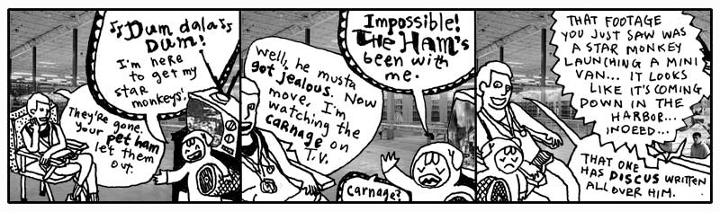